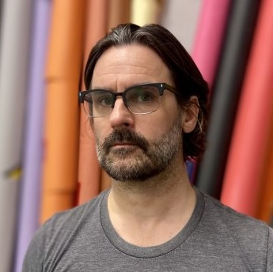

My work sits at the intersection of art, technology, and teaching. I am an artist and educator: a photographer by training and practice, a programmer by more recent study, and a teacher for more than twenty years.
I was an Assistant Professor of Digital Photography at Montclair State University from 2004 to 2025, where I also directed the MFA in Studio Arts and developed and taught courses in creative coding. My artistic practice explores digital and photographic processes; I hold a PhD from the University of the West of England on the digital recreation of nineteenth-century photographic printing methods.
In 2017, I completed a software development program at Fullstack Academy in New York. That same year I began working with Vidcode, an edtech startup whose premise was that coding and creativity belong together. The curriculum work I contributed to there ran from 2017 to 2019 and covered a three-course K-12 JavaScript sequence, a standalone Earth Day lesson, and a teacher professional development program delivered to schools in New Jersey, New Hampshire and Kansas.
I brought that curriculum thinking back into my own teaching at MSU, where I developed two courses: Digital Literacy (ARFD106), a foundation course covering the web, algorithms, and basic HTML/CSS/JavaScript for first-year art and design students, and Creative Coding for Graphic Designers and for Artists (VCDS225/ARGS260), a studio-practice course in which students developed and presented creative coding work in a critique context.
Since 2021 I have worked as a designer for the Institute for the Advancement of Philosophy for Children at Montclair State, producing professional redesigns of the institute's foundational P4C novel series. The work spans four books — Harry Stottlemeier's Discovery, Pixie, Elfie, and Lisa — typeset from manuscript in InDesign, with new cover art, illustrations, diagrams, and production in both print-ready PDF and ePub formats.
This portfolio collects that work.